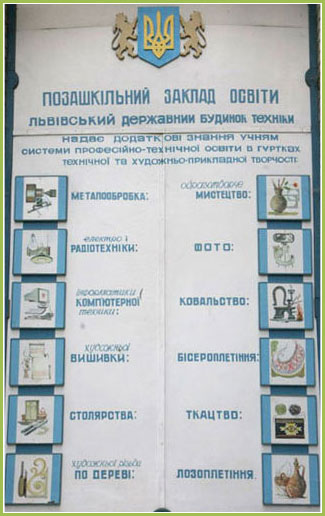

ЛЬВІВСЬКИЙ ДЕРЖАВНИЙ БУДИНОК ТЕХНІКИ
Позашкільний заклад освіти
Позашкільний заклад ПТО Львівський державний Будинок техніки виступає організатором розвитку вмінь і здібностей учнівської молоді у заходах позаурочної зайнятості, дбає про належний рівень морального виховання молоді, постійно проводить масові заходи, що направлені на піднесення національно-патріотичного, культурно-спортивного, художньо-естетичного виховання та створює умови для організації змістовного дозвілля. Безумовно, успіхи профтехосвіти – це результат спільної, давно і добре налагодженої співпраці із усіма закладами профтехосвіти.
Соціальний та науково-технічний розвиток впливає на процес реформування позашкільної освіти і виховання молоді, на пошук нових форм і методів творчого розвитку підростаючого покоління. Позашкільна освіта займає вагоме місце в системі безперервної освіти і є її невід’ємною ланкою. В Україні йде активний процес становлення позашкільних навчальних закладів, які будують свій навчально-виховний процес на основі сучасних педагогічних технологій та надбань педагогічної практики.
І саме одним з таких закладів позашкільної освіти є Львівський державний Будинок техніки, який з 1986 року надає знання, формує вміння та навички за інтересами, забезпечує потреби особистості у творчій самореалізації, сприяє розвитку технічної, художньо-прикладної, інтелектуальної творчості, готує до активної професійної та громадської діяльності, створює умови для організації змістовного дозвілля відповідно до здібностей, обдарувань та стану здоров’я учнівської молоді. У практиці організації позаурочної виховної роботи в навчальних закладах ПТО Львівської області педагогічні працівники Будинку техніки застосовують стратегію локальних змін: раціоналізація, оновлення окремих ланок діяльності через програмне забезпечення, розширення мережі гуртків, профільних секцій, творчих об’єднань, проведення масових заходів, конкурсів, екскурсій на постійно діючій виставці при Львівському державному Будинку техніки.
Щороку до різних напрямків технічної та художньо-прикладної творчості Будинок техніки залучає понад 5 тисяч учнів профтехосвітніх закладів Львівщини до 243 гуртків різних напрямів з урахуванням їхніх нахилів, здібностей та побажань.
- Головні завдання, які вирішують творчі працівники Будинку техніки в процесі навчально-виховної, інформаційно-методичної, організаційно-масової роботи окреслені за напрямками:
- реалізація державної політики у сфері позаурочної діяльності;
- формування в учнівської молоді національної свідомості, активної громадської позиції, прагнення до здорового способу життя;
- виявлення, розвиток і підтримка талантів учнівської молоді, стимулювання її творчого самовдосконалення, залучення до науково-технічної та дослідно-експериментальної діяльності;
- надання методичної допомоги ПТНЗ з питань впровадження форм і методів навчання і
- виховання у навчально-виховний процес; просвітницька діяльність.
Три базові орієнтації: знання – здібності – цінності стали ключовим напрямом у роботі Львівського державного Будинку техніки, який є головною ланкою позашкільної навчально-виховної роботи в комплексній підготовці робітничих кадрів різних професій. Адже виховання творчої особистості, громадянина незалежної України – це цілісна система підготовки молоді, допомога їй у визначенні змісту життя в умовах радикальних соціально-економічних змін, нових форм господарювання, а також залучення її до системи культурних цінностей українського народу. „Виховання, як зазначила видатний український педагог Софія Русова, - це передання найкращих моральних заповітів і знань попередніх поколінь для того, щоб із дитини виробилася людина в найкращому значенні слова”.
Lviv’s State Technological Skill Establishment
The social and scientifically technological development, affect the process of reformation of extra curricular education and upbringing of youth. It promotes the search of new methods and techniques of creative development of the younger generation. Extra curricular education plays an important role in the system of perpetual education, in fact it is its core. There is an active process of formation of extra curricular education institutes that build the youths’ educational process on the basis of modern educational technologies and pedagogical practices in Ukraine.
One of these extra scholastic education institutions is Lviv’s State Technological skills house, founded in 1986 it provides opportunities to obtain knowledge, and acquire new skills based on personal interests, satisfy’s the individual needs of the students of technical-commercial education in creative self realization. It promotes the development of technical, artistic, and applied intellectual work, as well as prepares for active professional and public activity, while creating the conditions for organization of leisure according to abilities, talents and health of youth.
In practice of organization of discretionary work in educational institutions of technical education in Lviv’s pedagogical establishments staff of the Technological skills house use the strategy of local change, rationalization , the upgrading of individual parts activities on new software, increase of number of available clubs, specified groups for particular issues, creative association , organization of events, competitions, excursions on permanent exhibition at the Lviv State House of technology.
Every year more than 5 thousand students from Technical-Commercial institutes of Lviv are attracted to 243 clubs of different focus according to their abilities, talents, and desires by the Lviv State Technological skills institution.
The main tasks that the stuff of the Technological skills institute tries to achieve during their educational, informational and mass work are:
implementation of state policy in the optional activities ; formation of national consciousness, active social position and desire for healthy lifestyle in young students; identification, development and support of talented young students, stimulation of their creative self-improvement. Attraction to scientifically – technical and experimental activity ; providing methodical help to technical institutions; educational activities. Three basic orientations: knowledge - skills - values are the key priority in the work of Lviv State Technological skills house. This institution is a major component of out-of-school educational work, it plays an important role in the complex education of working personnel of various professions. >In today’s independent Ukraine the upbringing of a creative personality of a citizen requires the complete system of youths preparation, assistance inquest for the meaning of their life under the conditions of social and economic changes , new ways of management , as well as emirs the youth into a wholesome lifestyle filled with true traditions and values of the Ukrainian culture.
According to Sofia Rusova an outstanding Ukrainian teacher “it conveys of the best ethical rules and knowledge of previous generations for children to develop into moral beings, in the best sense of the word.”